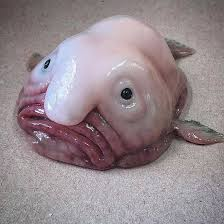

Der Bobfisch
Was ist ein Bobfisch?
Der Bobfisch ist ein Tiefseefisch, der in grosser Tiefe lebt, wo Kälte, Dunkelheit und hoher Wasserdruck herrschen. Sein weicher Körper ist an diese Bedingungen angepasst und wirkt erst an der Oberfläche ungewöhnlich.
Warum sieht er so komisch aus?
- Er lebt in grosser Tiefe
- Dort ist der Wasserdruck sehr hoch
- Sein Körper ist weich wie Gelatine
- An der Wasseroberfläche sieht er „matschig“ aus
Fakten über den Bobfisch
- Lebt bis zu 1’000 Meter tief
- Frisst kleine Meerestiere
- Er ist nicht gefährlich
- Wurde einmal zum „hässlichsten Tier der Welt“ gewählt
